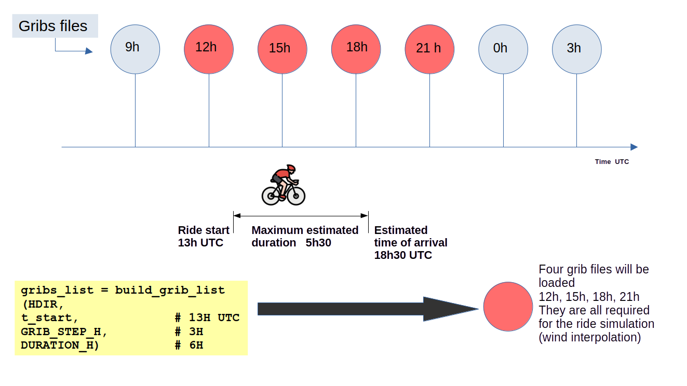

Input Data#
To simulate a bike ride, you need to define the following input data:
Physical cycling parameters: physical characteristics of the rider, bike, and road surface.
Cyclist effort level: baseline effort for simulation, defined by base power or base speed.
Behavioral cycling parameters: how the rider behaves on climbs, descents, and turns.
Wind: data required to estimate wind speed and direction along the route over time.
Route: the route, provided as a GPX file.
Physical Cycling Parameters#
CdA and Crr#
Definition#
CdA and Crr are two key simulation parameters.
The aerodynamic drag coefficient (CdA) represents air resistance for a moving cyclist. It depends on several factors, including:
rider position,
bike and component shape,
rider morphology.
CdA is expressed in m².
The rolling resistance coefficient (Crr or Cr) depends mainly on:
road and surface type (smooth/rough asphalt, concrete, gravel, etc.),
tires (size, pressure, compound).
Quick Reference Table#
The table below can help for a quick start:
Activity |
CdA range |
Crr range |
Typical [CdA - Crr] |
|---|---|---|---|
Bikepacking / Travel |
0.45-0.65 |
0.005-0.007 |
[0.55 - 0.006] |
Gravel bike |
0.35-0.55 |
0.005-0.007 |
[0.40 - 0.006] |
Amateur road cycling |
0.30-0.40 |
0.004-0.005 |
[0.35 - 0.0045] |
Pro road cycling |
0.24-0.32 |
0.003-0.004 |
[0.28 - 0.0035] |
Pro triathlon / TT |
0.17-0.24 |
0.003-0.004 |
[0.21 - 0.0035] |
For more precise settings:
For Crr, see https://www.bicyclerollingresistance.com/ (adjust by load and pressure).
For CdA, calibrate from one or more real rides.
This simulation is primarily designed for solo riding.
Riding in a group reduces aerodynamic drag, and the effect varies by position in the group. For group rides, one practical approach is to reduce solo CdA, then calibrate against real rides in similar conditions.
Mass#
Mass corresponds to the combined weight of rider + bike (including typical clothing/gear), in kilograms.
Cyclist Effort Level#
Base Power (P0)#
Base power quantifies rider effort in simulation. It is the power (W) on flat terrain with no wind.
This base power is then adjusted by:
rider behavior profile,
route gradient,
turns,
wind effects.
If you replay a completed ride with GPX timestamps, providing P0 is not mandatory. For future simulation, P0 (or v0) is required to compute speed and timing.
Recommended practice:
use a P0 calibrated from replaying this same route,
or replay a similar ride and reuse the calibrated value,
or provide a realistic base speed v0 (flat, no wind), then convert to P0.
Notes:
Power meters measure crank power. Some power is lost in drivetrain transmission.
The model does not explicitly model drivetrain losses.
If you use power-meter values directly, reducing by about 3% to 5% can be reasonable.
Physical Parameter Settings#
In Python, CdA, Crr, and Mass are floating-point values:
CdAin m²,Crras a dimensionless coefficient,Massin kg.
# Example values (replace with your own estimates)
my_cda = 0.480
my_crr = 0.005
my_mass = 80.0
P0 and v0 are also floating-point values:
P0in watts,v0in m/s.
# Example values
P0 = 130.0
v0 = 30.0 / 3.6 # 30 km/h converted to m/s
Behavioral Cycling Parameters#
Behavior Profiles#
Cyclists naturally adjust power output based on terrain. The simulation uses an adaptive power model.
The behavior profile controls how power is adjusted for:
uphills,
downhills,
corners.
Wind is treated as virtual slope (positive or negative), so behavior settings for climbs/descents also influence wind response.
Three behavior modes are available:
realisticconservativeaggressive
You can choose different modes for uphill, downhill, and cornering.
For a quick start, three preset profiles are available:
Profile name |
Uphill behavior |
Downhill behavior |
Corner behavior |
|---|---|---|---|
amateur |
conservative |
conservative |
conservative |
competitive |
realistic |
realistic |
realistic |
pro |
aggressive |
aggressive |
aggressive |
You can also build a custom profile by:
combining modes differently per category,
manually tuning one or more internal factors.
You can display a profile at any time, save it, and reload it later.
Built-in Presets#
Uphill Modes#
Mode |
Steep slope |
Medium slope |
Gentle slope |
Description |
|---|---|---|---|---|
realistic |
3.5 |
2.5 |
1.5 |
Balanced effort |
conservative |
2.0 |
2.0 |
2.0 |
Prudent and steady |
aggressive |
4.0 |
4.0 |
4.0 |
High-effort climbing |
Downhill Modes#
Mode |
Medium slope |
Steep slope |
Max speed |
Description |
|---|---|---|---|---|
realistic |
6.0 |
20.0 |
22 m/s |
Safe, controlled descent |
conservative |
3.0 |
3.0 |
18 m/s |
Very cautious |
aggressive |
5.0 |
5.0 |
22 m/s |
Confident, performance-oriented |
Corner Modes (max speed, m/s)#
Mode |
Straight |
Slight |
Moderate |
Sharp |
Hairpin |
|---|---|---|---|---|---|
realistic |
22.0 |
18.0 |
14.0 |
7.0 |
4.5 |
conservative |
20.0 |
16.0 |
12.0 |
6.0 |
4.0 |
aggressive |
22.0 |
22.0 |
22.0 |
22.0 |
22.0 |
Behavior Profile Settings#
A behavior profile can be created with helper functions.
Example: predefined competitive profile.
from biwipy.core.cyclist_params import (
CyclistBehavior,
create_competitive_profile,
)
my_profile = create_competitive_profile()
# Equivalent explicit form
my_profile = CyclistBehavior(
uphill='realistic',
downhill='realistic',
corner='realistic',
)
# Display current settings
my_profile.display()
Mixed mode profile:
behavior = CyclistBehavior(
uphill='conservative',
downhill='aggressive',
corner='realistic',
)
Customizing individual parameters:
behavior = CyclistBehavior()
behavior.uphill_facteur_forte = 5.0
behavior.downhill_vitesse_max_absolue = 20.0
behavior.corner_speed_slight = 20.0
Saving and loading profiles:
behavior.save('/path/to/profiles', 'my_rider.json')
behavior = CyclistBehavior.load('/path/to/profiles', 'my_rider.json')
Wind#
GFS Model#
Wind analysis currently relies on meteorological forecasts. As with any forecast, results should be interpreted with uncertainty in mind.
For replay on a past date, the most recent forecast available for that time is used. This is usually reliable (short forecast horizon).
For future simulations, reliability decreases as the ride date gets farther away.
Results beyond about 5 days should be interpreted with caution.
The tool currently uses NOAA GFS. Main characteristics:
global coverage,
4 model runs per day: 00Z, 06Z, 12Z, 18Z,
0.25° x 0.25° grid,
forecast horizon up to 16 days,
hourly steps up to 120 h, then 3-hour steps up to 384 h.
GRIB Files#
Forecast data is retrieved on demand using GRIB files. The tool downloads only required variables:
u10andv10wind components at 10 m,gust speed at 10 m.
From these, the model derives:
True Wind Speed (TWS),
True Wind Direction (TWD),
gust speed,
wind-along component along route bearing.
Ground-level wind is lower than 10 m wind due to roughness and obstacles. The model supports two approaches:
default constant roughness scaling,
optional terrain-based roughness map (see Roughness factor).
Default normalization:
TWS0 = TWS10 * 58%
GUST0 = GUST10 * 58%
TWS_final = TWS0 - 25% * (GUST0 - TWS0)
Requesting GRIB Files#
To simulate a ride, download the required GRIB files based on:
ride start datetime,
estimated ride duration,
time step (1 h or 3 h).
Helper function:
from datetime import datetime
from zoneinfo import ZoneInfo
from biwipy.weather.grib_finder import build_grib_list
hdir = '~/data'
origin_tz = ZoneInfo('Europe/Paris')
st_start = '2026-02-12 14:00:00'
t_start = datetime.fromisoformat(st_start).replace(tzinfo=origin_tz)
step = 3
duration = 6
gribs_list = build_grib_list(hdir, t_start, step, duration)
The following diagram summarizes how step size and duration determine the GRIB files to request:

Weather Initialization#
Once GRIB files are available:
from biwipy.weather import WeatherProvider
weather = WeatherProvider(gribs_list)
mygrib = weather.grib
GRIB Size and Storage Notes#
Downloaded files are stored under a gfs/YYYYMMDD/ tree in your selected directory.
~/data/gfs/YYYYMMDD/subset_01ef10f5__gfs.t18z.pgrb2.0p25.f003
Name fields:
subset_01ef10f5: subset hash (u10/v10/gust),t18z: 18:00 UTC model run,f003: forecast hour (+3 h from run).
Typical file size is around 2.5 MB.
Files already present are reused.
Wind model loading is accelerated with an optional cache (~/.cache/grib/) automatically purged after 48 h.
To disable cache:
from biwipy.weather import WeatherProvider
weather = WeatherProvider(gribs_list, bcache=False)
mygrib = weather.grib
Air Density#
Aerodynamic drag also depends on air density (rho), which decreases with altitude.
Standard sea-level value: rho = 1.225 kg/m3.
The tool estimates rho along the route from altitude.
from biwipy.core import bike_physics
rho_sea = bike_physics.calculate_air_density(0)
rho_kigali = bike_physics.calculate_air_density(1500)
rho_lapaz = bike_physics.calculate_air_density(3640)
You can also force a constant rho value in simulation methods.
Routes#
For full simulation workflows, see Simulation and replay. For detailed interfaces and signatures, see API Reference.
Two Types of GPX#
Routes are provided through GPX files.
There are two main GPX types:
GPX with timestamps: supports replay and full timing analysis.
GPX without timestamps: supports route geometry analysis and future simulation.
Platforms such as Strava often include timestamps only for your own rides.
In this tool:
GPX without timestamps can be used with
simulate_future().GPX with timestamps can be used with
simulate_future()andsimulate_replay().
Preprocessing#
A GPX file is processed as follows:
parse and convert to route segments,
detect and filter GPS outliers,
smooth altitude signal,
merge very short segments,
optionally remove stop segments (if timestamps are available).
Route Analysis#
RouteAnalyzer is the main interface for GPX preprocessing.
from biwipy.analysis import RouteAnalyzer
analyzer = RouteAnalyzer()
gpx_result = analyzer.process_gpx(filegpx, verbose=True, filter_stops_flag=True)
Preprocessing Output#
gpx_result contains:
has_timestamps(bool),t_start,t_end, and duration when timestamps are present,segmentslist for simulation,statsdictionary with route and preprocessing metrics.
segments = gpx_result.segments
stats = gpx_result.stats
print(f"Distance: {stats['distance_km']:.2f} km")
if gpx_result.has_timestamps:
t_start = gpx_result.t_start.astimezone(origin_tz)
print(f"Start date: {t_start} {t_start.tzname()}")
Useful Feature: Route Cutting#
You can isolate a subsection of the route by distance markers.
analyzer = RouteAnalyzer()
gpx_result = analyzer.process_gpx(filegpx, verbose=True, filter_stops_flag=True)
# Remove first and last 2 km (example)
gpx_result_cut = gpx_result.cut(
p1_km=2.0,
p2_km=gpx_result.stats['distance_km'] - 2.0,
)
segments = gpx_result_cut.segments
stats = gpx_result_cut.stats
Roughness Factor#
For finer near-ground wind estimation, you can use a roughness (z0) map based on ESA WorldCover.
The preprocessing step provides an integer bounding box:
stats['rectangle_SN']as(south, north)stats['rectangle_EW']as(west, east)
Raster files are stored in your selected cache directory and reused when available.
from biwipy.weather.roughness_provider import RoughnessProvider
roughdir = '~/data/roughness_cache'
provider = RoughnessProvider(cache_dir=roughdir)
if provider.prepare(*stats['rectangle_SN'], *stats['rectangle_EW']):
mygrib.roughness_provider = provider
print(
f"✓ Roughness provider activated - rectangle SN={stats['rectangle_SN']} EW={stats['rectangle_EW']}"
)
else:
print('⚠ Roughness provider unavailable - fallback to default z0')